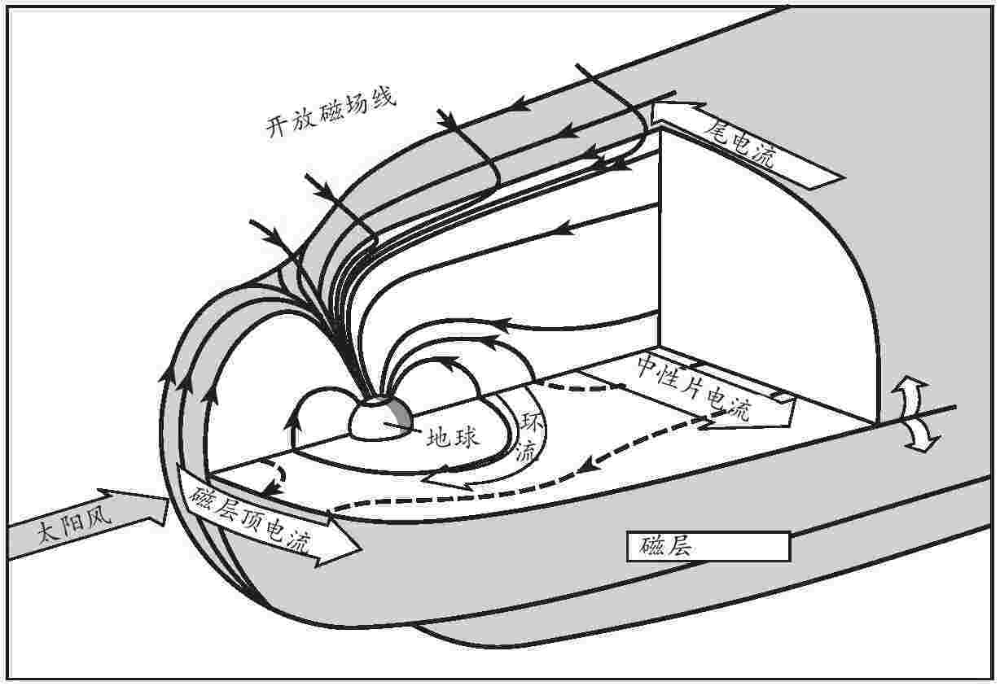
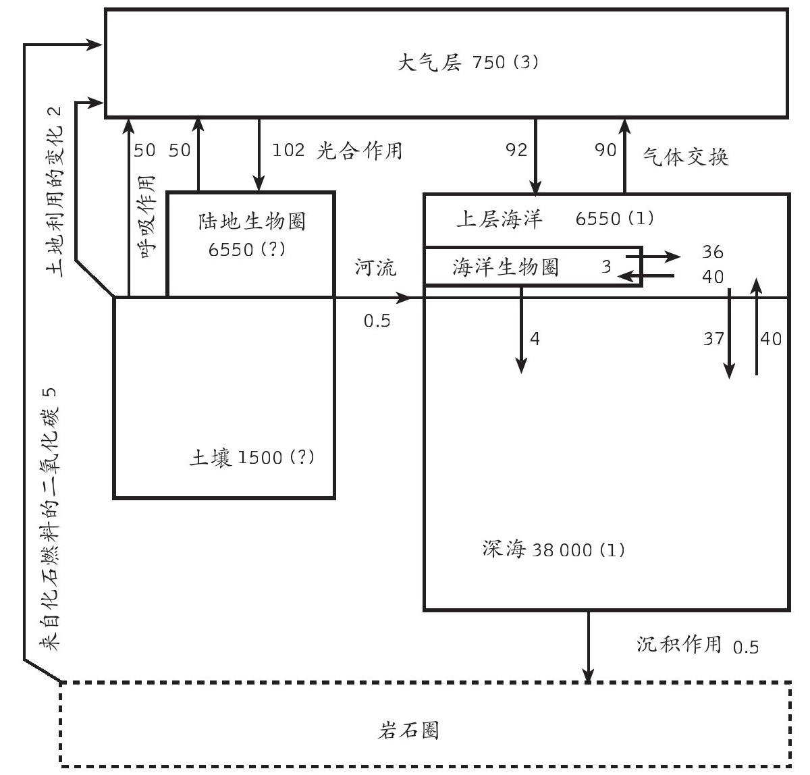
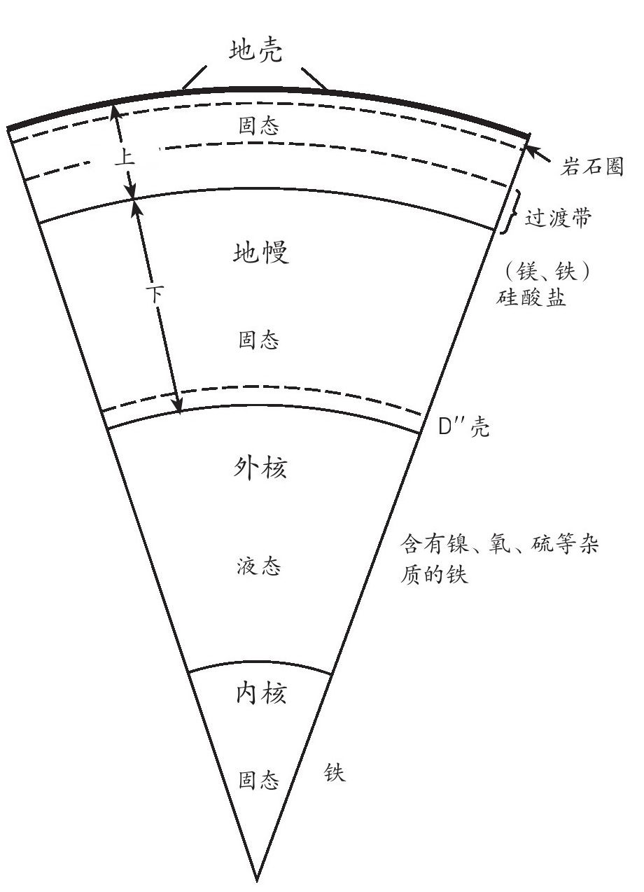
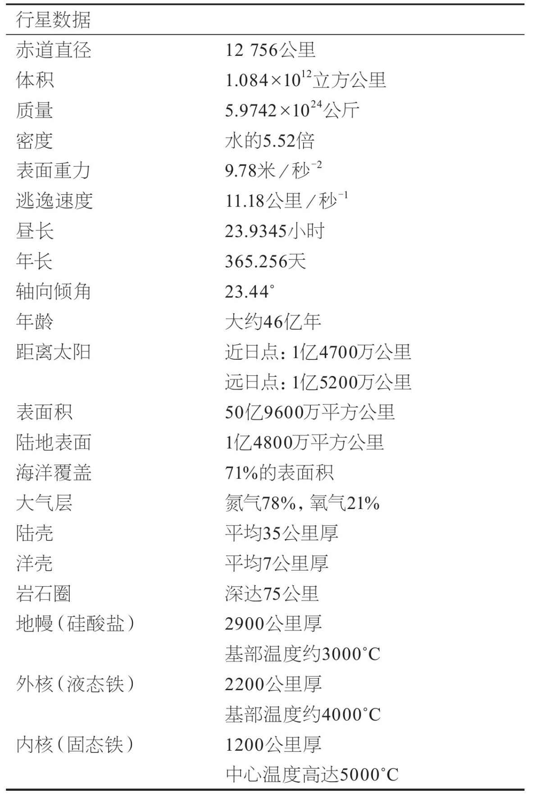

——弗雷德·霍伊尔爵士 [1] ，1948年
如何在薄薄一本小册子里容纳一个巨大的星球？尺幅千里已显不足，不过倒有两种天差地别的方法可供一试。一种是地质学采用的自下而上的方法：从本质上说，就是观测岩石。数个世纪以来，地质学家们奔波于地球表面，用手中的小锤子探测不同的岩石类型以及构成这些岩石的矿物颗粒。他们先是利用肉眼和显微镜、电子探针和质谱仪，把地壳简化为细小的组分。继而又绘制出不同的岩石类型之间的联系，并通过理论、观察和实验，提出了岩石运动的假说。他们从事的是一项艰巨的事业，提出了不少深刻的见解。地质学家前仆后继的努力构筑了一座理论大厦，为未来的地球科学家奠定了基础。正因为有了这种自下而上的方法，我才得以撰写本书，但这并不是我要采纳的视角。我本意并不想写一本岩石矿物和地质制图指南，而是要为一个星球画一幅肖像。
要观察我们这个古老的星球，还有一个自上而下的新方法，也就是日渐为人们所知的地球系统科学的视角。它把地球看成一个整体，而不仅仅是“现在”这一刻凝固的模样。采纳了地质学的“深时”概念，我们开始把这个星球看成一个动态的系统，由一系列过程和循环组成。我们开始了解它的运作机理。
开篇那句话是天文学家弗雷德·霍伊尔爵士在1948年提出的预言，仅仅十年后，人类就开始了太空之旅。当无人驾驶的火箭在外太空拍下第一批地球照片时，当第一代宇航员亲眼看到我们这个世界的全貌时，预言成真。最初的俯瞰并没有揭示什么关于地球的新秘密，却已成为一个充满象征意义的符号。对于亲眼看到那幅图景的许多宇航员来说，那是一次动人的体验：他们一直以来与之共存的这个世界竟然美丽如斯，又显得那么脆弱。地球科学也在同时经历了自身的革命，这大概不是偶然。板块构造的概念最终为世人所接受，其时距离阿尔弗雷德·魏格纳 [2] 首次提出该理论已逾50载。海底探索揭示出海底是从洋中脊系统扩展而成的。它不断漂移，迫使大陆分离或重组成新大陆。那些大陆一般大小的岩石板块，其形体之巨远超想象，却也翩然跳出绚丽而古老的舞步。
大约同时，与人类在广袤幽暗的太空中俯瞰到“地球”这个飘浮于其中的小小蓝宝石一样具有象征意义，全球兴起了一场环保运动，它的参与者既有对濒临灭绝的物种和雨林充满感伤主义眷恋的普通人，也有开始采纳全新视角、研究复杂互动的生态系统的科学家。如今，多数大学院系和研究组织都会用“地球科学”一词取代“地质学”，因为人们已经意识到该学科的广度绝不仅限于研究岩石。“地球系统”一词也被日益广泛地使用，因为人们认识到这些过程之间相互关联的动态性质，不仅包括由岩石构成的固态地球，也包括其上的海洋、脆弱的大气层，及其表面的薄薄一层生命体。我们生活的世界仿佛一颗洋葱，由一系列同心圈层构成：最外是磁层和大气层，继而是生物圈和水圈，再到固态地球的多个圈层。它们并非都是球形，有些圈层的实体性也远不如其他，但每个圈层都在努力维持着微妙的平衡。人们认为，这个系统的每个组成部分都不是固定不变的，其样态更像一个喷泉，整体结构或许能够维持不变，却会随着通过的物质和能量的大小而展现出不同的姿态。
岩石和石子可算不上口若悬河的说书人。它们静坐着，任凭青苔聚集，推一把才会动一下，生性如此。然而地质学家有许多办法令其开口。他们敲打之、切割之、挤之压之、推之拖之，直到它们开口讲述——有时还真要裂开才行。如果你懂得如何观察，岩石会将它的历史娓娓道来。岩石表面是最近的历史：它如何受到风化侵蚀；那些风、水和冰留下的创痕，是它沧桑的容颜。还有些表面看不到的疤痕记录着热量和压力的时期，以及这块岩石被埋葬时的变形情况。当这些变化较为极端时，会形成所谓的变质岩。关于岩石的来历也不乏线索。有些痕迹表明，它曾被熔融并从地球深层强推而上，在火山爆发时喷薄而出，或者侵入存在于地表的其他岩石，这些是火成岩。岩石内部矿物颗粒的大小可以揭示它们冷却的速度有多快。大块花岗岩冷却缓慢，因此其中的晶体很大。火山玄武岩的固化速度很快，因而颗粒细小。先前的岩石经过碾压的碎片会组成新的岩石。就这些岩石而言，碎片的大小往往能够反映其形成过程中环境的力量：从在静水中沉积而成的细粒页岩和泥岩，到沙岩，再到由汹涌水流冲刷而成的粗粒砾岩。其他岩石，诸如白垩和石灰岩，乃是在生命系统从大气中吸收二氧化碳并使之在海水里迅速凝结的过程中，由化学物质沉积而成的，这一过程听上去仿佛是把蓝天变成了顽石。
就连单个的矿物颗粒也有自己的故事。矿物学家能利用高精度质谱仪逐一分辨这些矿物颗粒的微小成分，甚至能够揭示痕量成分中同位素的不同比例（即同种成分的不同原子的排列方式）。有时这些数据能帮助我们确定矿物颗粒形成的年代，从而了解它们是否来自更加古老的岩石。矿物学家还能揭示某一晶体（如钻石）穿过地幔时经历了哪些阶段。就从海生生物体中提取的矿物质而言，研究其碳和氧同位素，甚至有助于测算在这些矿物质形成时海水的温度和全球气候。
地球的问题就在于，我们只有一个地球。我们只能看到它当前的状态，无法判断这一切是不是一场美妙的巧合。这也就是地球科学家把关注的目光重新投向天文学的原因。有些新型望远镜的功能很强大，对红外和次毫米波长辐射极为敏感，能够用于深度观测恒星形成区，了解在我们这个太阳系生成的过程中，曾经发生过怎样的故事。在某些年轻的恒星周围，人们通过望远镜观察到满是尘埃的光环，即所谓的原行星盘，它们有可能是正在形成的新的太阳系。不过要找到一些完整成型的地球类行星则比较困难。直接观察这样一个行星围绕一颗遥远恒星的轨道旋转，就像在高亮度探照灯附近寻找一只小小的飞蛾。然而近年来，人们通过间接方法发现了一些行星，主要方法是监测母恒星在运动过程中由于重力作用产生的微小摆动。作用最明显，因而也最先被发现的，似乎是由于那些行星比木星大得多，它们与其所环绕的恒星之间的距离也远小于地日距离。这样一来，就很难将其定义为“地球类行星”了。不过越来越多的证据表明，宇宙中确乎存在与我们的所在更加相像的多行星太阳系，但要找到像地球这样宜人的小行星可没那么容易。
为了直接看到这样的行星，需要使用人类一直梦寐以求的太空望远镜。美国和欧洲都在实施野心勃勃的计划，力图创建一个红外望远镜网络。其中每一台都要比哈勃太空望远镜大得多，必须将四五台这样的望远镜密集编队，把它们的信号组合在一起，才能解析整个行星。这些望远镜必须安置到木星那么远的位置，才能摆脱我们这个行星系所产生的浑浊不清的红外光的干扰。但那样一来，这些望远镜或许能够探测到遥远行星大气层中的生命迹象，尤其是，它们或许能够探测到臭氧。那也许意味着类地的气候和化学条件，外加游离氧的存在，据我们所知，这是只有生命体才能够维持的物质。
1990年2月，“旅行者”1号探测器在遭遇木星和土星之后冲出太阳系，途中传回了整个太阳系的第一张图片；如果真有外星来客，他们看到的太阳系大概就是那样一幅图景。太阳这颗耀眼的恒星占据了整个画面，那已经是从60亿公里之外拍摄的，相当于我们通常观察太阳的距离的40倍。从图片上几乎看不到任何行星。地球本身比“旅行者”号携带的相机中的一个像素还要小，它发出的微弱光芒则缥缈如一束日光。这是我们全部的世界，看上去却不过一粒微尘。但对于任何携带着适当工具的外星访客而言，那个小小的蓝色世界会立即引起他们的注意。与外行星狂暴肆虐的巨大气囊、火星的寒冷干燥或金星的酸性蒸汽浴不同，地球的一切条件都恰到好处。这里存在三种水相——液体、冰和蒸汽。大气组成不是已经达到平衡的死寂世界，而是活跃的，必须持续更新。大气中有氧气、臭氧，以及碳氢化合物的痕迹；这些物质如果不是在生命过程中持续更新，就不会长时间共存。这本身足以引起外星访客的注意，更不用说这里还有通讯、广播和电视设备不绝于耳的聒噪了。
我们对地球物理学还所知甚少。这并不是说这门学问深不可测，而是我们这颗行星的物理影响大大延伸到星球的固体表面之外，深入我们所以为的寂寥太空。但那里并非虚无。我们住在一串泡泡里，它们像俄罗斯套娃一样层层嵌套。地球的势力范围之外，是由太阳主宰的更大的泡泡。而那个大泡泡之外则是彼此重叠的多个泡泡，它们是很久很久以前由恒星或超新星爆炸产生的碎片不断膨胀而形成的。所有这些泡泡都存在于我们的银河系中，银河系则是已知的宇宙之中诸多星系所组成的超星团的一员，而这个超星团本身，可能只是诸多世界的量子泡沫 [3] 中的一个泡泡而已。
在大多数情况下，地球的大气层和磁场都在保护我们免受来自太空的辐射危害。如果没有这层保护，地球表面的生命就会受到太阳紫外线和X射线、宇宙射线，以及星系间剧烈事件所产生的高能粒子的威胁。太阳还终年不断地向外吹送粒子风，其组成主要是氢原子核或质子。这股太阳风一般以400公里每秒的速度掠过地球，在太阳暴期间，速度会增加三倍。它会弥漫到数十亿公里之外的太空中，越过所有行星，也许还会越过彗星的轨道，那些彗星轨道与太阳的距离要比地日距离远上数千倍。太阳风非常稀薄，但足以在彗星接近太阳系的心脏部位时吹散彗尾，因此，彗尾总是指向偏离太阳的一方。在用薄如轻纱的巨型太阳帆来推进航天器这类富有想象力的提议之中，运用的也是同样的原理。
地球凭借着自身的磁场，即磁层，来躲避太阳风。太阳风带电，所以是一种电流，无法穿越磁场线。相反，它会压缩地球磁层的向阳一侧，就像是海上行船时的顶头波，并且顺着风向拖出一个长尾，其长度几乎能够触及月球轨道。磁层中捕获的带电粒子在磁场线之间组成粒子带，并被迫旋转，从而产生了辐射。1958年，詹姆斯·范艾伦 [4] 在美国“探险者”1号卫星上放置了太空中第一个盖革计数器，首次发现了这些辐射带。要想延长航天器的使用寿命，就必须避开这些区域，没有防护设备的宇航员一旦进入这些区域，也会性命难保。

图2 地球磁包层图，太阳风将磁层向后扫进一个彗星式的结构。箭头指示电流的方向
地球的磁场线冲向极地，太阳风中的粒子也会在那里进入大气层，向下射出活跃的原子，产生壮观的极光。在大气层顶部，太阳风自身的氢离子会产生粉红色的薄雾，其下方的氧离子产生红宝石色的辉光，而同温层中的氮离子则产生蓝紫色和红色的极光。偶尔，太阳风中的磁场线会被迫靠近地球的磁场线，使两者重新接合，往往会导致能量的巨大释放，形成更加壮观的极光。
大气层的顶部没有明确的高度；航天飞机所处的近地轨道距地面260公里，那里的气压只有地面的十亿分之一，几乎就处于大气层之外了。但那里每一立方厘米空气中仍有大约十亿个原子，这些热粒子带电，因而对航天器会有腐蚀作用。在太阳活动最剧烈的时期，大气层会轻微膨胀，对近地航天器产生更大的摩擦阻力，所以为了让这些近地航天器保持在轨道之中，必须加大推力。80公里之上的顶部大气层有时被称为热大气层，因为那里非常热，不过那里的空气非常稀薄，不会灼伤皮肤。
大气层的这一区域还会吸收太阳发出的危险的X射线和部分紫外线辐射。因此，很多原子被“离子化”了，也就是说它们会失去一个电子。基于这一原因，热大气层也叫电离层。电离层导电，会反射某些频率的无线电波，这就是为什么全世界的人可以通过设置在地平线上方的发射机传送信号，听到短波无线电的广播。
地面之上仅仅20公里处，在热大气层、中间层和大部分同温层之下，大气中的空气含量仍不足10%。正是在这一高度附近，存在一个稀薄的臭氧层，所谓臭氧，即含有三个氧原子的分子。含有两个原子的普通氧分子被太阳辐射分离时，其中的一些就会重组为三原子的臭氧。对地球而言，臭氧是一种高效的防晒霜。如果地球大气层中所有的臭氧都浓缩在地面，就会形成一层只有约三毫米厚的臭氧层。但它依然能够过滤近乎全部的短波紫外线辐射——这是太阳发出的最危险的辐射——以及大部分中波紫外线。因此，臭氧层让生命免受晒伤和皮肤癌的威胁。由于人类活动所释放的氯氟烃等化学物质的严重破坏，整个臭氧层变得稀薄，而在清寒的春季，极地区域上空特有的臭氧空洞也越来越多。各个国际协定的签署有效放缓了氯氟烃的释放，臭氧层应该会恢复如初，但化学物质会长期存在，臭氧层的复原仍需时间。
对流层位于大气层最接近地面的15公里范围内，是活动最频繁的区域。天气变化就发生在这里。云生云消，风起风止，地球上的温湿转换，都在这里进行。在一个充满生机的星球上，一切看上去都像是能量的循环和流动。在靠近地表的对流层，这些循环都是由太阳能驱动的。随着地球绕自轴旋转，生成明显的昼夜更迭，地面也随之冷热交替；地球绕太阳公转则产生了一年内的季节变换，这是因为两个半球轮换着接收到更多的阳光。但还有比这更长的周期，比如地轴以数十万年为周期来回摆动。
就像地球绕太阳旋转一样，月球也绕着地球旋转。绕行一圈大约需要28天，这正是月份的由来。随着地球绕轴自转，月球的引力拉动地球周围的海水上涨，引发了潮汐。潮汐还能够抑制地球自转，昼夜更迭随之放缓。四亿年前的珊瑚化石上的日增长带表明，当时的昼夜时间要比现在短几个小时。
月球有助于地球的公转轨道保持稳定，从而稳定了气候。不过还有比这长得多的周期在起作用。地球围绕太阳公转的轨道并非标准圆形，而是一个椭圆，太阳位于两个焦点之一。因此，地日距离随着地球的公转而时刻变化着。此外，变化程度本身也会在95800年的周期内发生变化。而地球的自转轴也像失去平衡的陀螺那样，缓慢摇摆或按岁差旋进。在一个21700年的时间周期，地轴的轨迹可以描绘成一个完整的锥形。当前，地球在北半球的冬季距离太阳最近。地球自转轴与其绕太阳公转的轨道间的倾斜度（倾角）也会在41000年的时间周期内发生变化。这些所谓的米兰柯维奇循环 [5] 经过数万乃至数十万年的累积，就会对气候产生影响。325万年来，地球受到冰川期等现象的影响，都被归咎于米兰柯维奇循环。但事实上原因很可能更加复杂，这些循环的作用往往还会被海洋循环、云量、大气组成、火山气溶胶、岩石的风化、生物生产力等因素放大或缩小。
变化周期并不仅限于地球，太阳也会变化。在其50亿年的生命历程中，太阳变得越来越热。然而同一时期，由于温室气体水平下降，地球的表面温度却要恒定得多。这主要是生命体在起作用，植物和藻类消耗了大量二氧化碳，而二氧化碳的作用就像一张毛毯，给年轻的地球保暖。太阳还发生了其他变化。常规的太阳周期为11年，其间太阳黑子活动由盛转衰，继而反映出太阳磁活动的周期，而太阳磁活动产生了太阳暴和太阳风。其他类日恒星似乎有大约三分之一的时间没有太阳黑子，这一状态被称为蒙德极小期 [6] 。我们的太阳在公元1645-1715年间曾发生过这种情况。太阳能只下降了大约0.5%，却足以让北欧陷入所谓的“小冰川期”，经历一连串极其严酷的冬天。彼时寒冬冰封了伦敦的泰晤士河，也就有了在冰面上举办的集市和霜降会 [7] 。
太阳并非普施温暖，赤道地区最暖和。空气受热膨胀，气压升高。为恢复平衡，就有了风和空气流通。在这一切发生的同时，地球继续自转，空气也因而获得了角动量。赤道地区的角动量最大，结果产生了所谓的科里奥利效应。大气层与固体的星球并非紧密耦合，因此，当赤道风起时，风的动量与其下地表的自转无关。也就是说相对于地表，风在北半球弯向右侧，而在南半球则弯向左侧。这形成了高气压和低气压的空气循环体系，也就是给我们带来雨水或阳光的天气系统。
大片陆地和山脉也会影响热循环和水分循环。比如，在喜马拉雅山脉隆起之前是没有印度季风的。最重要的是，海洋在储存热能和环球传输热能方面发挥了重大作用。海洋顶部两米的热容量与整个大气层相当。与此同时，洋流中也进行着热循环。但表层环流并非全部。北大西洋的湾流就很能说明问题。北大西洋湾流携带着来自墨西哥湾的暖水流向北部和东部，这也是欧洲西北部冬季的天气比美国东北部温和得多的原因之一。随着暖水流向北方，其中一部分蒸发到云中，因而即使英国人外出度假，他们头顶上似乎也总是笼罩着这团裹带着水蒸气的云。余下的海洋表层水冷却下来，盐度也与日俱增。如此一来，这些表层水的密度也会上升，最终下沉，向南流到大西洋深处，大洋环流的传送带至此结束。
大约11000年前，地球结束了最后一次冰川期。冰雪融化，海平面上升，气候普遍变暖。紧接着，不过数年之后，天气突然再次变冷。这一变化在爱尔兰尤为突出，在那里，沉积岩芯中的花粉显示，植被突然从温带疏林恢复成苔原，后者主要是一种仙女木属植物。拉蒙特—多尔蒂地质观测所的沃利·布勒克尔对当时可能的情况进行了研究。随着北美地区的冰原后退，融化的淡水在加拿大中部形成了一个巨大的湖，其规模远比如今的北美五大湖地区要大得多。起初，湖水沿着一条大岩脊的方向流入密西西比河。随着冰层后退，东面突然出现了一条流向圣劳伦斯河的水路，海拔低得多。这个巨大冰冷的淡水湖几乎立即流向了北大西洋。入海的水量如此之大，海平面随即上升了30米之高。入海的淡水稀释了北大西洋表层水的盐分，事实上制止了大洋环流的传送带。因此，再也没有流向北大西洋的暖流，极寒天气卷土重来。1000年后，就像此前突然消失一样，大洋环流突然又重新开始，温暖的气候也回来了。
北大西洋的深水与南极地区冰冷的底层水一起，在远至印度洋和太平洋的深处找到了归宿。深层流持续汇入北太平洋，在其再次上升到表面之前，慢慢积累了各种养分。
地球大气层中某些气体的作用就像温室的玻璃一样，把阳光放进来加热地表，却也能阻止所产生的红外热辐射逸出。如果不是温室效应的作用，全球平均气温会比现在低15℃左右，生命几乎无法维系。温室气体主要是二氧化碳，但包括甲烷在内的其他气体也起着重要作用。水蒸气也一样，人们有时会忘记它在这方面的贡献。在数亿年时间里，植物通过光合作用从大气中消除二氧化碳，动物通过呼吸产生二氧化碳，已经形成了一个大致的平衡。大量的碳埋藏在石灰岩、白垩和煤炭等沉积物中，火山爆发则将碳从地球内部释放出来。
近年来，人们越来越关注所谓的温室效应加剧，即人类活动引起大气层中的温室气体水平显著上升。煤炭和石油等化石燃料的燃烧是罪魁祸首，但农业活动会产生甲烷，砍伐森林会从木材和土壤中释放二氧化碳，植被减少使得二氧化碳无法被再次吸收等，也难辞其咎。气候模型显示，这些活动可能会导致全球气温在下个世纪上升若干度，同时伴随着更为剧烈的极端气候，并有可能导致海平面上升。
1958年以来，有人仔细记录了夏威夷某座孤峰上二氧化碳水平持续的年增长率。全世界连续130多年的精确气候数据证实，全球平均气温升高了半度左右，最近30年的影响尤为显著。但自然界的气候记录可以追溯到很久以前的远古时期。树木的年轮载列出在它们存活期间干旱和严霜的发生以及野火的频率。从现今保存的木材的重叠层序向前推测，可以显示5万年前的气候状况。珊瑚的生长轮可揭示同一时段的海表温度。沉积物中的花粉粒记录了700万年间植被格局的变迁。地形展现了过去的冰川作用和数十亿年间的海平面变化。但某些最为精确的记录来自钻探得到的冰核与海洋沉积物。冰核不但显示了积雪的速度及圈闭的火山灰，冰里的气泡还提供了雪中圈闭的远古大气样本。氢、碳和氧的同位素也能标示当时的全球温度。如今，南极洲和格陵兰的冰层记录能够追溯到40万年以前。大洋钻井计划在全球各处的海洋沉积物中取样，可获得远至1.8亿年前的记录。圈闭在这些沉积物中的微体化石的同位素比值可以揭示出温度、盐度、大气二氧化碳水平、大洋环流，以及极地冰冠的范围。所有这些不同的记录表明，气候变化是无可逃遁的现实，在漫长的过去，气候要比我们如今体验到的暖和得多。
生命是地球最脆弱的圈层，但它或许对地球产生了最为深远的影响。如果没有生命，地球也许会像金星一样，成为一个失控的温室世界，或是像火星一样，成为一片寒冷的沙漠。当然也不会有温和的气候和为我们提供养分的富氧大气。我们已经知道，原始藻类通过吸收二氧化碳覆盖层，破坏了年轻地球的隔热罩，一度跟为之供暖的太阳亦步亦趋。独立科学家詹姆斯·洛夫洛克认为，这样的反馈机制将陆地气候维持了20亿年以上。他使用古希腊神话中大地女神“盖亚”（Gaia）的名字为该机制命名。洛夫洛克并未假称这一控制中存在着任何有意识或有预谋的成分；“盖亚”没有什么神力。但主要以细菌和藻类形式存在的生命，的确在这一自我平衡的过程中起到了举足轻重的作用，使地球变得宜居。一个名为“雏菊世界”的简单计算机模型显示，两个或两个以上的竞争物种能够在适于生存的限制条件下建立起控制环境的负反馈机制。洛夫洛克猜想，随着人类活动加剧温室效应，地球的全球系统会逐步适应这种变化，即使这类适应可能对人类不利。
碳元素在无休无止地移动。每年大约有1280亿吨碳通过陆地上的种种过程，以二氧化碳的形式释放到大气中，而几乎同样大量的碳又会立刻被植物和硅酸盐岩石风化所吸收。海上的情况与之类似，只是吸收量比释放量略多一些。如果没有火山爆发以及每年燃烧化石燃料所释放的50亿吨碳，整个系统大致会处于平衡状态。大气层中保持的碳总量相当少——只有7.4亿吨，仅比陆地上的动植物所保持的略多一些，比海洋生物所保持的略少一些。相比之下，以溶剂方式储存在海洋中的碳总量洋洋可观，高达340亿吨，而储存在沉积物中的碳总量比这还要高出2000倍。因此，在碳循环中，溶解和沉淀等物理过程可能比生物过程更为重要。但生命体似乎手握王牌。浮游植物所结合的碳会被释放回海水中，如果不是由于桡足动物粪球粒的物理属性，接下来也将非常迅速地释放到大气中。桡足动物是一种微小的浮游动物，其排泄物是质地紧密的小颗粒，可以缓慢地沉入深海，至少暂时将其中所含的碳从碳循环中除去。

图3 碳循环。这一简化图表显示了储存在大气层、海洋和陆地中的碳总量（以10亿吨为单位）估计值。箭头旁的数字表示储存量的年度变化值，括号中的数字表示年度净增值。与大多数其他变化量相比，燃烧化石燃料的贡献值很小，但足以打破平衡
地球的内部就像一颗洋葱，由一系列同心壳或同心层组成。顶部是一层硬壳，海洋下的平均厚度为7公里，大陆下为35公里。这层硬壳位于地幔上方坚硬的岩石层之上，其下是较为柔软的软流层。上地幔的范围深达670公里左右，下地幔则深至2900公里。在一层薄薄的过渡层下，是熔融的铁所组成的液态外核以及大小相当于月球的固态铁质内核。但这不是一颗完美的洋葱。各圈层之间存在着横向差异，圈层的厚度也不尽相同，而且我们现在知道，圈层之间还持续进行着物质交换。我们的星球与完美的洋葱模型之间最显著的差异，正是现代地球物理学最不关心也最漠视的部分，而我们恰可以从那里找到线索，了解是哪些过程在驱动整个系统的运行。

图4 地球径向切面上显示的主要“洋葱”圈层
还记得1960年代流行的熔岩灯和后来数不清的复古产品吗？它们是地球内部运转过程的绝佳模型。关灯时，在透明的油质层之下有一层红色的黏性半流体物质。开灯时，底部的灯丝将其加热，这层红色半流体受热膨胀，密度因此降低，开始以延展的块状上升到油层顶部。一旦充分冷却，它又下沉回原位。地球的地幔中情况也是如此。放射性衰变和地核所产生的热量驱动着某种热力发动机，地幔中并非完全固态的岩石在数十亿年时间里缓慢循环。正是这种循环驱动了板块构造运动，导致大陆漂移，并引发了火山爆发和地震。

在地表，我们脚下的热力发动机与头顶的太阳灶彼此呼应，其协同作用驱动了岩石周而复始的循环。地幔循环和大陆碰撞所抬升的山脉受到了太阳能驱动的风、雨和雪的侵蚀。化学过程也在起作用。大气层的氧化，活生物所产生的酸的化学溶解，以及溶解的气体均有助于分解岩石。大量的二氧化碳可以溶解在雨水中，形成导致化学风化作用的弱酸，把硅酸盐矿物变成黏土。这些残余的岩石被冲回，沉在河口和海底，形成新的沉积物，最终被抬升形成新的山脉，或沉回地幔进入深层的再循环。整个过程是由结合进矿物结晶结构中的水来润滑的。这一岩石循环由18世纪的詹姆斯·赫顿 [8] 首先提出，但他当时并不清楚循环发生的深度及其时间尺度。
到目前为止，我们只是粗略介绍了我们这个神奇星球的皮毛而已。接下来我们就要启程，去挖掘岩石深处和那遥远的过去的秘密了。